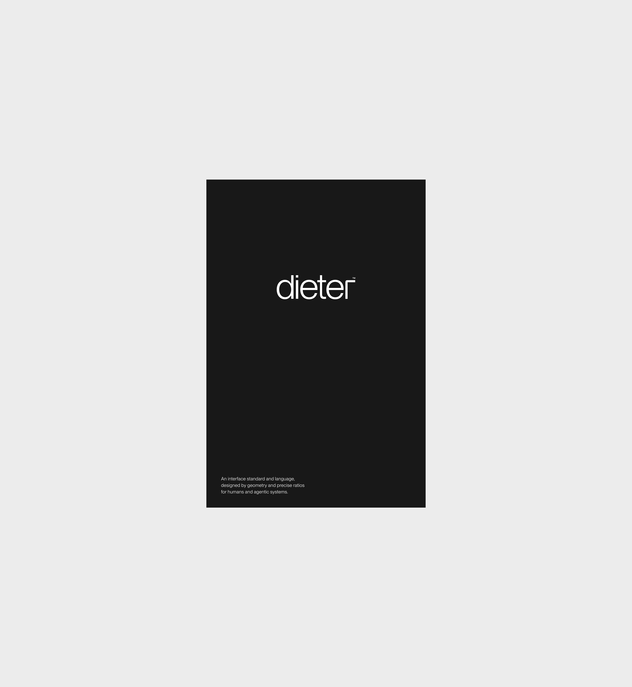
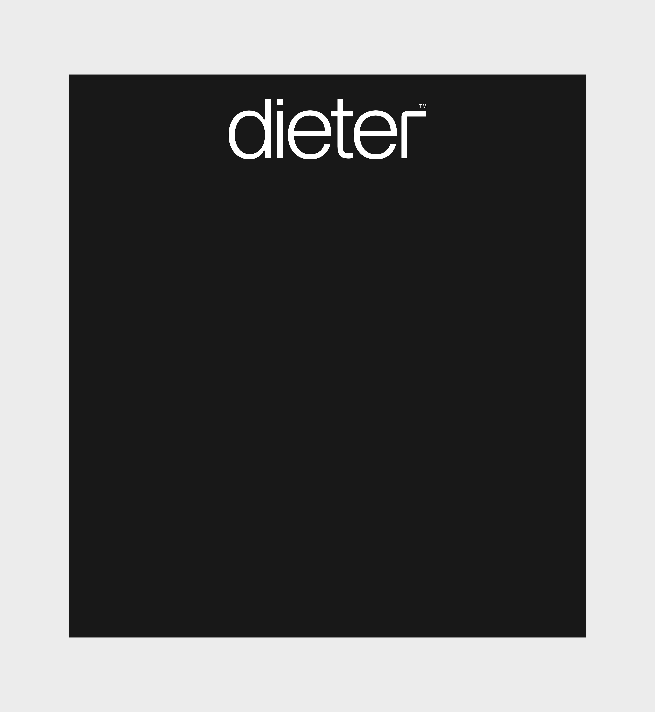
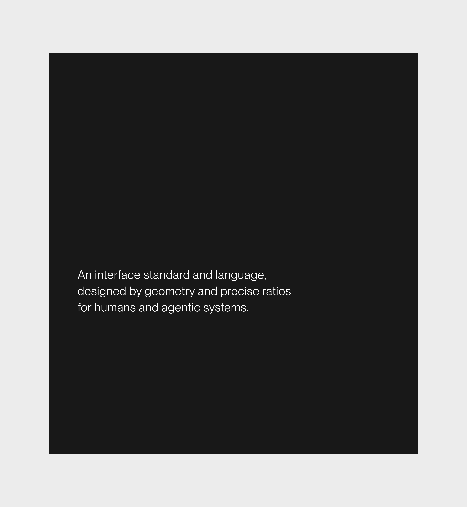

dieter™ is not about making interfaces look better. It is about preventing them from getting worse. As products grow, micro-decisions accumulate, exceptions multiply, spacing drifts, hierarchy weakens, and what began as a clean system slowly turns into visual debt. This drift is not aesthetic, it is operational. It creates rework cycles, endless debates, inconsistent user experience, slower onboarding, and a gradual loss of perceived quality that impacts trust, conversion, and brand positioning.
An intelligent design agent and system that ensures consistency, eliminates structural debt over time, secures against chaos, and enables intentional brand expression, dieter™ absorbs the operational burden that most teams quietly carry. By separating brand expression from structural invariants, it ensures that no matter how many features are shipped or how many hands touch the interface, coherence remains intact. Its purpose is not only to stabilize systems, but to make good taste structural: anyone can design within it and produce an interface that feels balanced, intentional, and premium by default.
In practical terms, dieter™ reduces UI entropy while elevating baseline quality. It protects structural integrity so organizations do not pay the compounding cost of inconsistency over time, and it allows teams without senior design oversight to ship interfaces that still feel precise and composed. In a market where speed is commoditized, stability and default taste become leverage. dieter™ turns interface quality from a fragile outcome into a governed standard.
An interface standard and language, designed by geometry and precise ratios for humans and agentic systems.
It is built on a single fixed geometry: one proportional system, one typographic rhythm, one density model, one spacing scale. Brand expression remains flexible—colors, typography, tone—but the structural layer that defines proportion, hierarchy, and breathing space is protected. Identity can evolve while geometry remains intact.
Because the geometry is fixed, spacing cannot drift, hierarchy cannot flatten, density cannot quietly degrade, and components cannot mutate arbitrarily. dieter™ removes the majority of unnecessary micro-decisions by defining what should not be decided. It is not a theme and not a visual preference; it is a grammar that governs how interfaces behave, ensuring that even non-designers can assemble screens that remain coherent and proportionally sound.
The result is predictable coherence and taste by construction. Changing a brand becomes a token-level adjustment while the structural rhythm holds across screens, features, and contexts. For human teams, this means clarity and reduced cognitive load; for agentic systems, it means controlled output instead of amplified randomness. dieter™ does not offer infinite flexibility; it offers guaranteed consistency, transforming interface design from subjective preference into enforceable structure and making refined interfaces the default outcome, not the exception.


